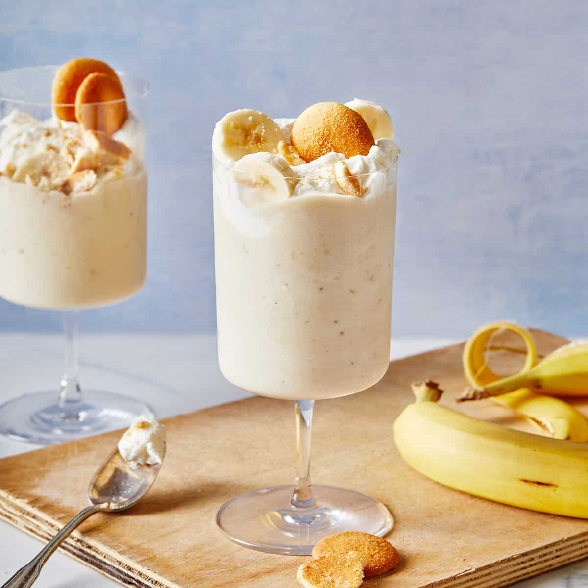

Banana Pudding Milkshake

Description
If y'all get hype over some classic southern banana pudding, then brace yourselves, 'cause this Banana Milkshake recipe is about to steal your heart, honey! We're talking frosty bananas blending with pillowy soft whipped cream and a touch of vanilla pudding magic. This is about to be your new fave way to beat those sugar cravings. So grab your blender and get ready to whip up some pure deliciousness!
Ingredients
-
2 ripe frozen bananas cut in slices
-
1/2 cup cold low-fat whipped topping
-
3/4 - 1 cup milk
-
4 tsp powdered vanilla instant pudding
-
1 tsp pure vanilla extract
-
Whipped cream (for garnish)
-
Vanilla wafers (for garnish)
Steps
-
Add frozen banana slices, whipped topping, milk, instant oudding powder, and vanilla extract to blender and blend until smooth milkshake consistency.
-
Pour milkshake into glasses.
-
Top with whipped cream and vanilla wafers and enjoy.